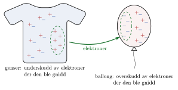

Elektrisk ladning
Visste du at elektrisitet og magnetisme er to sider av samme sak? Det er dette faktum som ligger bak det vi f.eks. kaller elektromagnetisk induksjon. Elektrisitet og magnetisme sett under ett ble utviklet av James Clerk Maxwell på 1800-tallet, og kalles elektromagnetisme. Det er én av de fire grunnleggende naturkreftene i universet. Denne videoen gir en introduksjon:
La oss nå likevel konsentrere oss om elektrisitet, som et eget fenomen, selv om det altså egentlig er en del av det vi kaller elektromagnetisme.
Du gnir en ballong mot genseren din, og etterpå kan ballongen henge fast i taket. Hva er det som har skjedd?
All materie er bygget opp av atomer. Disse atomene har masse. De veier altså noe. Men i tillegg har de noe som kalles elektrisk ladning. Et atom har en kjerne med positivt ladde protoner (og nøytrale nøytroner), og rundt kjernen beveger det seg negativt ladde elektroner. Et atom har like mange protoner som elektroner og er derfor elektrisk nøytralt: Den positive og den negative ladningen opphever hverandre.
Elektronene i de ytterste skallene kan forholdsvis lett flyttes fra ett legeme til et annet. Når du gnir ballongen mot genseren, flyttes elektroner fra genseren over til ballongen. Ballongen får da et overskudd av elektroner og blir negativt ladet, mens genseren får et underskudd og blir positivt ladet.

Ladning blir verken laget eller ødelagt, den bare flyttes. Dette kalles ladningsbevaring. Til sammen har genseren og ballongen like mye ladning som før, altså null.
Mens masse alltid er positiv, kan elektrisk ladning være både positiv og negativ. Gravitasjonsfeltet rundt en masseklump (jorda, for eksempel, eller et atom) trekker alltid andre masseklumper mot seg.
[CHECK FIGUR, jorda og månen, med tiltrekkende krefter]
Med ladning er det ikke slik. Her har vi to forskjellige fortegn, og får derfor flere muligheter. To legemer med like ladninger frastøter hverandre, mens to legemer med motsatt ladning tiltrekker hverandre.
[CHECK FIGUR av alle fire muligheter.]
Elementærladningen
En annen viktig forskjell mellom et legemes masse og ladning er at ladning kommer i pakker. Massen til et legeme kan variere kontinuerlig. Slik er det ikke med ladning.Den minste mulige pakken for ladning kalles elementærladningen, og alle andre ladnigner er et helt antall ganger elementærladningen. Det finnes altså en minsteladning i universet!
Elektrisk ladning har symbolet \(q\) (eller \(Q\)) og enheten coulomb (C). Den minste frie ladningen som finnes i naturen, er altså elementærladningen, som forøvrig også er ladningen til et proton.
\[ \mathrm{e} = 1.602\cdot 10^{-19}\ \mathrm{C} \] Et proton har ladningen \(+\mathrm{e}\), og et elektron har ladningen \(-\mathrm{e}\). Ladningen til et legeme er derfor alltid et helt antall elementærladninger: \[ q = N\cdot \mathrm{e} \] der \(N\) er antall elektroner i overskudd (eller underskudd).
Eksempel: Ladningen på en ballong. En ballong er gnidd mot en genser og har fått ladningen \(q = -0.10\ \mathrm{\mu C}\).
Hvor mange elektroner har ballongen i overskudd?
Hvilken ladning har genseren fått?
a) Vi løser \(q = N\cdot\mathrm{e}\) for \(N\) og bruker størrelsen av ladningen: \[ N = \frac{|q|}{\mathrm{e}} = \frac{0.10\cdot 10^{-6}\ \mathrm{C}}{1.602\cdot 10^{-19}\ \mathrm{C}} = 6.24\cdot 10^{11} \approx \underline{\underline{6.2\cdot 10^{11}}} \] Det er mange elektroner, men likevel en svært liten andel av alle elektronene i ballongen.
b) Ladning er bevart. Elektronene som ballongen har fått, kommer fra genseren. Genseren har derfor fått ladningen \(\underline{\underline{+0.10\ \mathrm{\mu C}}}\).
Ledere, isolatorer og halvledere
Stoffer deles inn i tre grupper etter hvor godt de leder elektrisk strøm:
- Ledere har mange løst bundne elektroner som kan bevege seg fritt gjennom stoffet. Metaller som kobber og aluminium er gode ledere, og brukes derfor i ledninger.
- Isolatorer holder godt fast på elektronene sine, så ingen ladning kan bevege seg fritt. Eksempler er gummi, plast og glass. De brukes rundt ledninger, slik at strømmen ikke går dit den ikke skal.
- Halvledere, som silisium, ligger imellom. Ledningsevnen kan styres, og de er grunnlaget for dioder, transistorer og all moderne elektronikk.
Ladninger med likt fortegn frastøter hverandre, og ladninger med motsatt fortegn tiltrekker hverandre. Kraften blir mindre jo lenger fra hverandre ladningene er. Dette beskrives av Coulombs lov, som har samme form som Newtons gravitasjonslov.
Det forklarer også ballongen i taket: Den negative ballongen skyver elektronene i taket litt unna, slik at overflaten nærmest ballongen blir svakt positiv. Siden de positive ladningene er nærmest, blir ballongen trukket mot taket.
En ballong er gnidd mot en genser og har fått ladningen \(q = -0.20\ \mathrm{\mu C}\).
Hvor mange elektroner har ballongen i overskudd?
Hvilken ladning har genseren fått?
a) \(N = \dfrac{|q|}{\mathrm{e}} = \dfrac{0.20\cdot 10^{-6}\ \mathrm{C}}{1.602\cdot 10^{-19}\ \mathrm{C}} = 1.25\cdot 10^{12} \approx \underline{\underline{1.2\cdot 10^{12}}}\)
b) Ladningen er bevart, så genseren har fått \(\underline{\underline{+0.20\ \mathrm{\mu C}}}\).
Hvor mange elektroner må til for å få ladningen \(-1.0\ \mathrm{C}\)? Hvorfor møter vi sjelden så store ladninger på ting i hverdagen?
\(N = \dfrac{1.0\ \mathrm{C}}{1.602\cdot 10^{-19}\ \mathrm{C}} = \underline{\underline{6.2\cdot 10^{18}}}\)
En coulomb er en enorm ladning å samle på ett legeme. Ladninger med likt fortegn frastøter hverandre så kraftig at de straks ville spre seg eller lade ut gjennom lufta. Typiske ladninger fra gnidning er noen mikrocoulomb eller mindre.
Forklar med elektroner hvorfor en ledning er laget av kobber inni og har plast utenpå.
Kobber er en leder: Det har frie elektroner som kan bevege seg gjennom metallet, så strømmen går lett i ledningen. Plast er en isolator: Elektronene sitter fast, så ingen ladning kan gå gjennom plasten. Plasten hindrer at strømmen går gjennom oss eller over til andre ledninger når vi tar på ledningen.